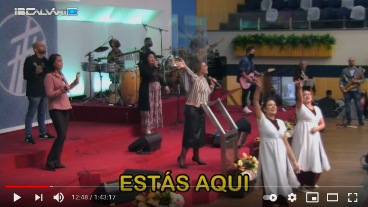

IBCalvários
Repositório de documentação da Igreja Batista do Calvário de Santo André
Project maintained by MarceloCFSF Hosted on GitHub Pages — Theme by mattgraham
Tarefas do Controlador de Imagens durante o culto
Índice
TODO: Revisar e terminar
TODO: Usar esse vídeo como referência.
TODO: Citar os momentos de atençao citando o vídeo de referência posicionado no momento propício utilizando o parâmetro “t” do YouTube, como nesse exemplo.
Início da transmissão
Durante a reprodução do vídeo de abertura certifique-se de que a câmera central está com foco no ministro.
Durante o louvor
…
Priorizar mais as cenas abertas mostrando o grupo
Independente da câmera, utilize foi combinado com a liderança da igreja que seriam priorizadas mais as cenas abertas com a igreja.
Nos momentos em que o louvor sinalizar que alguém estiver em evidência devemos focar mais na pessoa, mas não focar no instrumento, isso deve acontecer em solos por exemplo.
Exemplos de cena aberta (clique para ver no vídeo):


Focar na pessoa ou grupo e não no instrumento
Quando for o momento pedir evidência a alguém, focar na pessoa com meio corpo, não focar no instrumento, conforme ilustrado abaixo.


Durante a palavra
…
Apelo ou final da palavra
…